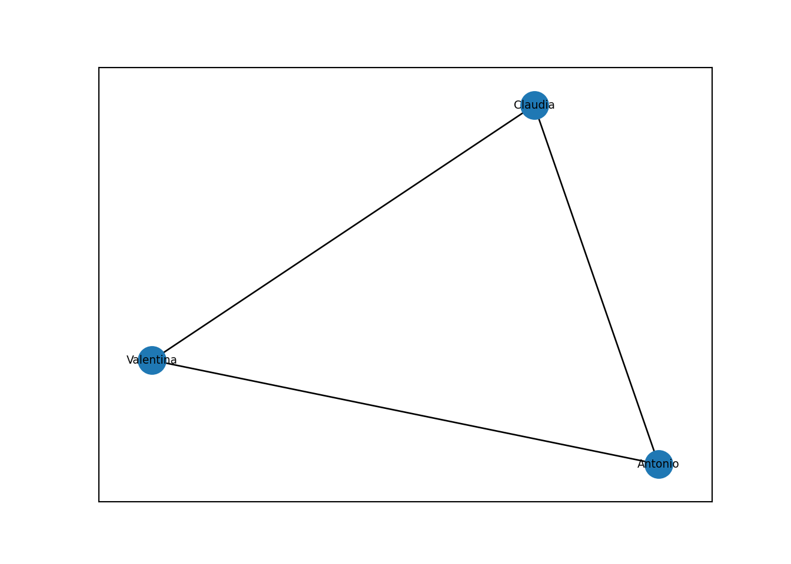
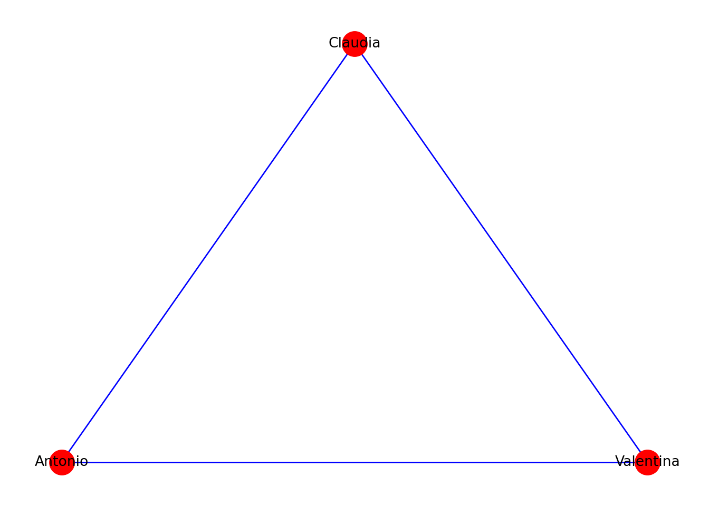
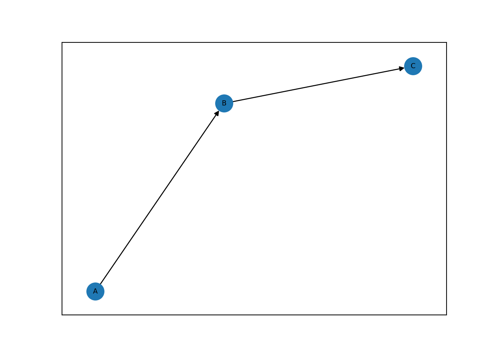
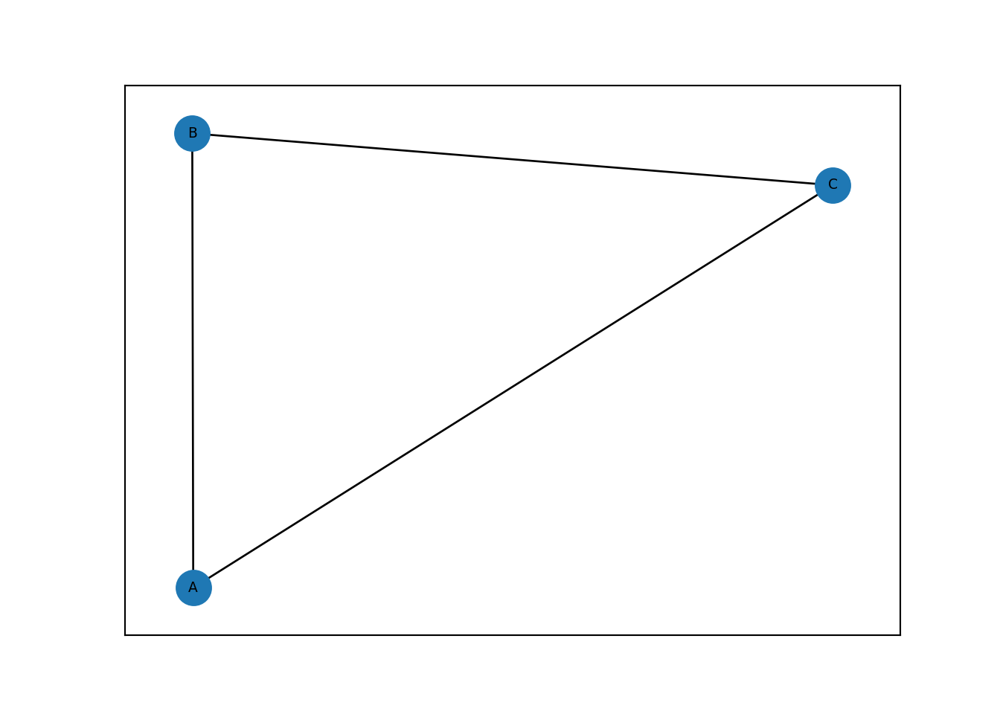
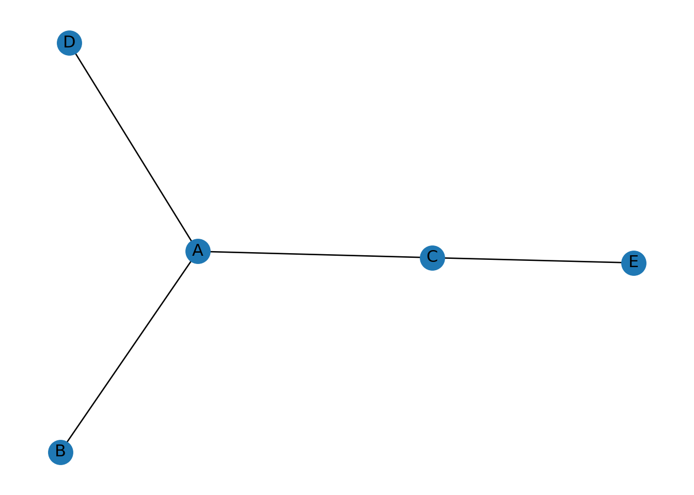
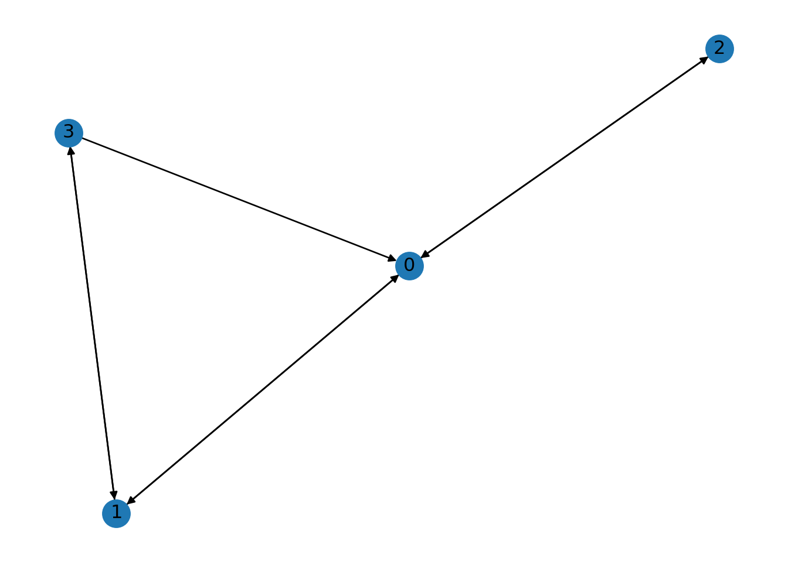
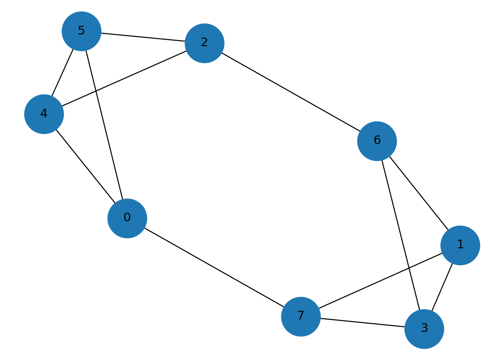
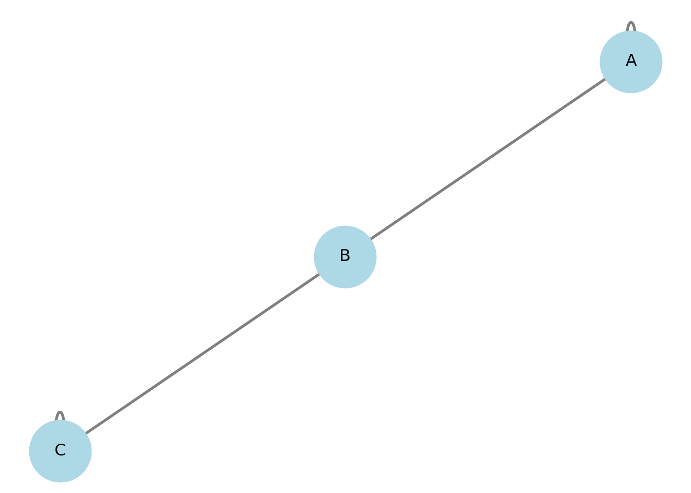
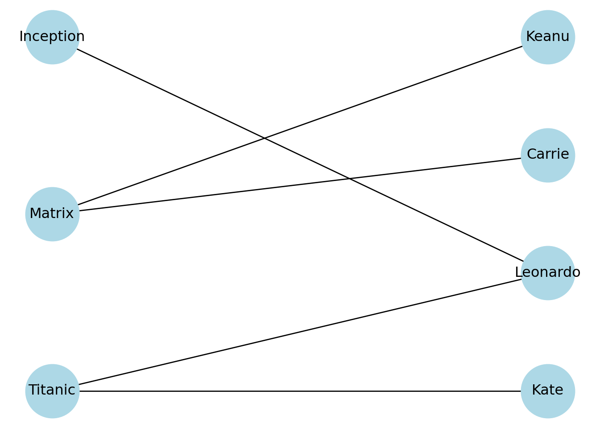

Sección 2 Fundamentos de Teoría de Redes
Primero, tenemos que importar algunas de las librerías básicas.
networkxes la librería básica de redes en Python.pandasynumpyson básicas para manipulación de bases de datos y arreglos.matplotlib.pyplotes la básica para hacer plots.
Una de las formas de definir una gráfica en Python es crear primero un objeto gráfica y después ir agregando los vértices y aristas. Al crear el objeto, se generará una gráfica vacía.
Podemos agregar nodos de uno en uno, por medio de una lista y las aristas es similar, podemos especificar entre que nodos están.
# Un solo nodo
G.add_node(1)
# Dos nodos como lista
G.add_nodes_from([2,3])
# Arista entre nodo 1 y 2
G.add_edge(1, 2)
# Arista entre nodo 2 y 3
e = (2,3)
G.add_edge(*e)Algo que queremos hacer, es poder visualizar estas gráficas.

Vamos a crear otras gráficas.
MyGraph = nx.Graph()
MyGraph.add_edge('Antonio', 'Valentina')
MyGraph.add_edge('Antonio', 'Claudia')
MyGraph.add_edge('Claudia','Valentina')
print(MyGraph) # Imprimir información de la gráfica## Graph with 3 nodes and 3 edges## Número de vértices 3## Número de aristas 3
Existen varios atributos que podemos usar para dibujar la red. Por ejemplo:nx.draw_circular, nx.draw_planar, nx.draw_random, nx.draw_spectral, nx.draw_spring, nx.draw_shell.

Vamos a construir una red simétrica. Los pesos pueden añadir intensidad de la relación en los nodos, cada arista tendrá un peso. Para gráficas dirigidas se usa nx.DiGraph().
DG = nx.DiGraph()
# Agregamos nodos y aristas
DG.add_nodes_from(["A", "B", "C"])
DG.add_edges_from([("A", "B"), ("B", "C")])
# Dibujamos la gráfica
nx.draw_networkx(DG, font_size=7)
Y podemos crear una gráfica con pesos como sigue.
WG = nx.Graph()
# Agregamos nodos y aristas
WG.add_edge("A", "B", weight=3)
WG.add_edge("B", "C", weight=2)
WG.add_edge("C", "A", weight=1)
# Dibujamos la gráfica
nx.draw_networkx(WG, font_size=7)
Sin embargo, si queremos que salga el peso, hay que modificar la forma de dibujarla.
WG2 = nx.Graph()
WG2.add_node("A", pos=(1,1))
WG2.add_node("B", pos=(2,2))
WG2.add_node("C", pos=(1,0))
WG2.add_edge("A","B",weight=0.5)
WG2.add_edge("A","C",weight=9.8)
pos=nx.get_node_attributes(WG2,'pos')
nx.draw(WG2,pos)
labels = nx.get_edge_attributes(WG2,'weight')
nx.draw_networkx_edge_labels(WG2,pos,edge_labels=labels)## {('A', 'B'): Text(1.499993978679413, 1.499993978679413, '0.5'), ('A', 'C'): Text(1.0, 0.49999868113081897, '9.8')}
Si tenemos ya una base de datos, vista como un data frame, podemos construir su gráfica también tomando la información de esta.
df = pd.DataFrame({ 'from':['A', 'B', 'C','A'], 'to':['D', 'A', 'E','C']})
G=nx.from_pandas_edgelist(df, 'from', 'to')
nx.draw(G, with_labels=True)
2.0.1 Matriz de Adyacencia
Las gráficas en networkx, las podemos crear también a partir de su matriz de adyacencia.
Supongamos que tenemos la siguiente matriz de adyacencia de una gráfica.
adjacency_matrix = np.array([[0, 1, 1, 0], [1, 0, 0, 1], [1, 0, 0, 0], [1, 1, 0, 0]])
print(adjacency_matrix)## [[0 1 1 0]
## [1 0 0 1]
## [1 0 0 0]
## [1 1 0 0]]Vamos a usar esta matriz para crear la gráfica.
## [(0, 1), (0, 2), (0, 3), (1, 3)]
Y esta misma matriz, la podríamos usar para generar la red dirigida.
## [(0, 1), (0, 2), (1, 0), (1, 3), (2, 0), (3, 0), (3, 1)]
2.0.2 Redes con pesos
En muchas aplicaciones, no basta saber si dos nodos están conectados: queremos medir intensidad.
Ejemplo: ciudades conectadas por tiempo de traslado.
G = nx.Graph()
edges = [
("CDMX", "Querétaro", 2.5),
("CDMX", "Puebla", 1.8),
("Querétaro", "San Luis", 3.0),
("Puebla", "Veracruz", 2.2)
]
G.add_weighted_edges_from(edges)
pos = nx.spring_layout(G, seed=42)
nx.draw(G, pos, with_labels=True, node_size=2000, node_color="lightblue")
labels = nx.get_edge_attributes(G, "weight")
nx.draw_networkx_edge_labels(G, pos, edge_labels=labels)## {('CDMX', 'Querétaro'): Text(-0.03804987394440071, 0.29044345796704585, '2.5'), ('CDMX', 'Puebla'): Text(0.03310940855012143, -0.2517211871628955, '1.8'), ('Querétaro', 'San Luis'): Text(-0.09868076835080415, 0.7517180744260015, '3.0'), ('Puebla', 'Veracruz'): Text(0.10107661635624102, -0.7703266027551717, '2.2')}
nx.spring_layout: Cuando dibujas una red, necesitas decidir dónde se coloca cada nodo en el plano (coordenadas (x,y)). nx.spring_layout(G) calcula esas posiciones automáticamente usando un modelo tipo resortes:
cada arista actúa como un resorte que “jala” a sus extremos para acercarlos,
los nodos se repelen entre sí para que no queden amontonados,
el algoritmo busca una configuración “bonita” (pocas intersecciones, distancias razonables).
No cambia el grafo, solo produce un diccionario de posiciones.
## {'CDMX': array([-0.00479153, 0.03721578]), 'Querétaro': array([-0.07130957, 0.54368146]), 'Puebla': array([ 0.07100945, -0.54065133]), 'San Luis': array([-0.12605188, 0.95975409]), 'Veracruz': array([ 0.13114354, -1. ])}Ejercicio: Comparar con nx.circular_layout(G) para ver que “layout” = regla de colocación.
2.0.3 Redes dirigidas
En una red dirigida las aristas tienen orientación.
Ejemplo: prerequisitos de materias.
DG = nx.DiGraph()
DG.add_edge("Álgebra I", "Álgebra II")
DG.add_edge("Álgebra II", "Geometría")
DG.add_edge("Cálculo I", "Cálculo II")
pos = nx.spring_layout(DG, seed=10)
nx.draw(DG, pos,
with_labels=True,
node_size=2500,
node_color="lightcoral",
arrows=True,
arrowsize=20)
plt.title("Red dirigida (prerrequisitos)")
plt.show()
Grado en redes dirigidas
In-degree: número de aristas que llegan.
Out-degree: número de aristas que salen.
## In-degree: {'Álgebra I': 0, 'Álgebra II': 1, 'Geometría': 1, 'Cálculo I': 0, 'Cálculo II': 1}## Out-degree: {'Álgebra I': 1, 'Álgebra II': 1, 'Geometría': 0, 'Cálculo I': 1, 'Cálculo II': 0}2.0.4 Graficas acíclicas
Un grafo dirigido es acíclico si no contiene ciclos.
DAG = nx.DiGraph()
DAG.add_edges_from([
(1,2),
(1,3),
(2,4),
(3,4)
])
print("¿Es DAG?", nx.is_directed_acyclic_graph(DAG))## ¿Es DAG? TrueOrdenamiento topológico:
## [1, 2, 3, 4]Si numeramos los vértices según ese orden, la matriz de adyacencia queda triangular superior.
En un grafo dirigido sin ciclos, existe un orden de los vértices tal que todas las aristas van “hacia adelante” en ese orden. nx.topological_sort devuelve ese orden.
## [1, 2, 3, 4]Si reetiquetas/ordenas los vértices según ese orden y construyes la matriz de adyacencia en ese orden, la matriz queda triangular superior. Por ejemplo:
DAG = nx.DiGraph()
DAG.add_edges_from([(1,2),(1,3),(2,4),(3,4)])
order = list(nx.topological_sort(DAG))
print("Orden topológico:", order)## Orden topológico: [1, 2, 3, 4]## Matriz en ese orden:
## [[0 1 1 0]
## [0 0 0 1]
## [0 0 0 1]
## [0 0 0 0]]## [[0 0 0 0]
## [1 0 0 0]
## [1 0 0 0]
## [0 1 1 0]]2.0.5 Redes k-regulares
Un grafo es \(k\)-regular si todos los vértices tienen grado \(k\).
R = nx.random_regular_graph(d=3, n=8)
nx.draw(R, with_labels=True, node_size=1500)
plt.title("Grafo 3-regular")
plt.show()
2.0.5.1 Multigrafos (multiaristas)
En algunos sistemas pueden existir varias relaciones entre dos nodos.
Ejemplo: dos actores que colaboran en varias películas.
## 0## 1## 2## Número de aristas entre A y B: 3Y para visualziarla:
pos = nx.spring_layout(MG, seed=3)
nx.draw(MG, pos, with_labels=True, node_size=2000)
plt.title("MultiGraph")
plt.show()
Para que se vea que hay varias aristas entre los mismos nodos, usamos connectionstyle con distintos radios.
## 0## 1## 2## 0pos = nx.spring_layout(MG, seed=2)
# Dibujo de nodos
nx.draw_networkx_nodes(MG, pos, node_size=2000, node_color="lightgreen")
nx.draw_networkx_labels(MG, pos)## {'A': Text(0.8284668313118051, -0.8726270765014832, 'A'), 'B': Text(0.12093500309378266, -0.1273729234985168, 'B'), 'C': Text(-0.949401834405588, 1.0, 'C')}# Dibujo de aristas: si son paralelas, usamos curvaturas distintas
edges = list(MG.edges(keys=True))
for i, (u, v, k) in enumerate(edges):
rad = 0.15 * (i % 3) # radios 0, 0.15, 0.30 (repite)
nx.draw_networkx_edges(
MG, pos,
edgelist=[(u, v)],
width=2,
connectionstyle=f"arc3,rad={rad}",
edge_color="gray"
)
plt.title("MultiGraph con multiaristas (arcos curvos)")
plt.axis("off")## (np.float64(-1.0962567812307198), np.float64(0.9571815276728693), np.float64(-1.0082027056679594), np.float64(1.1546815676912536))
## Número de aristas A-B: 32.0.6 Loops (lazos)
Un loop es una arista de un nodo a sí mismo.
## Grados: {'A': 3, 'B': 1}Importante:
En grafos no dirigidos, un loop contribuye 2 al grado.
NetworkX dibuja loops como “arcos” pequeños, pero a veces quedan discretos.
G = nx.Graph()
G.add_edges_from([("A","A"), ("A","B"), ("B","C"), ("C","C")]) # loops en A y C
pos = nx.spring_layout(G, seed=4)
nx.draw(G, pos, with_labels=True, node_size=2000, node_color="lightblue",
width=2, edge_color="gray")
plt.title("Grafo con loops en A y C")
plt.show()
También podemos listarlos:
## Loops: [('A', 'A'), ('C', 'C')]2.0.7 Redes bipartitas
Ejemplo: películas y actores.
data = {
"Movie": ["Matrix","Matrix","Titanic","Titanic","Inception"],
"Actor": ["Keanu","Carrie","Leonardo","Kate","Leonardo"]
}
df = pd.DataFrame(data)Vamos a construirla:
B = nx.Graph()
movies = df["Movie"].unique()
actors = df["Actor"].unique()
B.add_nodes_from(movies, bipartite=0)
B.add_nodes_from(actors, bipartite=1)
B.add_edges_from([(row.Movie,row.Actor)
for _,row in df.iterrows()])
nx.draw(B, with_labels=True, node_size=2000)
plt.title("Red bipartita")
plt.show()
Otra forma de hacer el plot:
pos = nx.bipartite_layout(B, movies) # movies será la capa superior
nx.draw(B, pos,
with_labels=True,
node_size=2000,
node_color="lightblue")
plt.title("Red bipartita (películas arriba, actores abajo)")
plt.show()
Y se puede “forzar” también esto:
movies = list(df["Movie"].unique())
actors = list(df["Actor"].unique())
pos = {}
# Películas arriba (y=1)
for i, movie in enumerate(movies):
pos[movie] = (i, 1)
# Actores abajo (y=0)
for i, actor in enumerate(actors):
pos[actor] = (i, 0)
nx.draw(B, pos,
with_labels=True,
node_size=2000,
node_color="lightyellow",
edge_color="gray")
plt.title("Red bipartita forzada (arriba películas, abajo actores)")
plt.ylim(-0.5, 1.5)## (-0.5, 1.5)
Otra forma más, coloreando cada capa:
color_map = []
for node in B.nodes():
if node in movies:
color_map.append("lightcoral")
else:
color_map.append("lightblue")
nx.draw(B, pos,
with_labels=True,
node_color=color_map,
node_size=2000)
plt.title("Red bipartita con capas diferenciadas")
plt.show()
2.0.7.1 Matriz de incidencia
B_matrix = np.zeros((len(movies), len(actors)))
for _,row in df.iterrows():
i = list(movies).index(row.Movie)
j = list(actors).index(row.Actor)
B_matrix[i,j] = 1
print(B_matrix)## [[1. 1. 0. 0.]
## [0. 0. 1. 1.]
## [0. 0. 1. 0.]]2.0.7.2 Proyección one-mode
## [[1. 1. 0. 0.]
## [1. 1. 0. 0.]
## [0. 0. 2. 1.]
## [0. 0. 1. 1.]]from networkx.algorithms import bipartite
df = pd.DataFrame({
"Movie": ["Matrix","Matrix","Titanic","Titanic","Inception"],
"Actor": ["Keanu","Carrie","Leonardo","Kate","Leonardo"]
})
movies = list(df["Movie"].unique())
actors = list(df["Actor"].unique())
# Grafo bipartito
B = nx.Graph()
B.add_nodes_from(movies, bipartite=0)
B.add_nodes_from(actors, bipartite=1)
B.add_edges_from([(row.Movie, row.Actor) for _, row in df.iterrows()])
# Posiciones forzadas (películas arriba, actores abajo)
pos = {}
for i, m in enumerate(movies):
pos[m] = (i, 1)
for i, a in enumerate(actors):
pos[a] = (i, 0)
# Colores por capa
node_colors = ["lightcoral" if n in movies else "lightblue" for n in B.nodes()]
nx.draw(B, pos, with_labels=True, node_color=node_colors, node_size=2000, edge_color="gray")
plt.title("Bipartita: películas (arriba) – actores (abajo)")## Text(0.5, 1.0, 'Bipartita: películas (arriba) – actores (abajo)')## (-0.6, 1.6)## (np.float64(-0.31500000000000006), np.float64(3.315), np.float64(-0.6), np.float64(1.6))
Vamos a crear las dos proyecciones.
2.0.8 Proyección one-mode a Actores
# Proyección a actores (one-mode)
P_actors = bipartite.weighted_projected_graph(B, actors)
print("Aristas (actor-actor) con pesos:", list(P_actors.edges(data=True)))## Aristas (actor-actor) con pesos: [('Keanu', 'Carrie', {'weight': 1}), ('Leonardo', 'Kate', {'weight': 1})]posA = nx.spring_layout(P_actors, seed=12)
nx.draw(P_actors, posA, with_labels=True, node_size=2000, node_color="lightblue", edge_color="gray")
# Etiquetas de peso
labelsA = nx.get_edge_attributes(P_actors, "weight")
nx.draw_networkx_edge_labels(P_actors, posA, edge_labels=labelsA)## {('Keanu', 'Carrie'): Text(-0.35775095734238305, 0.19487556024727604, '1'), ('Leonardo', 'Kate'): Text(0.3577635707881759, -0.19487292868700534, '1')}## Text(0.5, 1.0, 'Proyección one-mode: red de actores (peso = películas compartidas)')## (np.float64(-0.9375232965348552), np.float64(1.184108548539511), np.float64(-0.699174762922632), np.float64(1.0700229118070153))
2.0.9 Proyección one-mode a PELÍCULAS
# Proyección a películas (one-mode)
P_movies = bipartite.weighted_projected_graph(B, movies)
print("Aristas (movie-movie) con pesos:", list(P_movies.edges(data=True)))## Aristas (movie-movie) con pesos: [('Titanic', 'Inception', {'weight': 1})]posM = nx.spring_layout(P_movies, seed=12)
nx.draw(P_movies, posM, with_labels=True, node_size=2300, node_color="lightcoral", edge_color="gray")
labelsM = nx.get_edge_attributes(P_movies, "weight")
nx.draw_networkx_edge_labels(P_movies, posM, edge_labels=labelsM)## {('Titanic', 'Inception'): Text(-0.5000007838353786, -0.32225756924227716, '1')}## Text(0.5, 1.0, 'Proyección one-mode: red de películas (peso = actores compartidos)')## (np.float64(-0.7473488387186665), np.float64(1.0832070875580317), np.float64(-0.6374842965559769), np.float64(0.7055652738076293))
Si \(B\) es la matriz de incidencia (películas × actores), entonces:
\(B^TB\): co-ocurrencia actor–actor
\(BB^T\): co-ocurrencia película–película
# Matriz de incidencia: filas=películas, columnas=actores
Bmat = np.zeros((len(movies), len(actors)), dtype=int)
movie_idx = {m:i for i,m in enumerate(movies)}
actor_idx = {a:j for j,a in enumerate(actors)}
for _, row in df.iterrows():
Bmat[movie_idx[row.Movie], actor_idx[row.Actor]] = 1
print("B (películas x actores):\n", Bmat)## B (películas x actores):
## [[1 1 0 0]
## [0 0 1 1]
## [0 0 1 0]]W_actors = Bmat.T @ Bmat # actores x actores
W_movies = Bmat @ Bmat.T # películas x películas
print("\nB^T B (actores x actores):\n", W_actors)##
## B^T B (actores x actores):
## [[1 1 0 0]
## [1 1 0 0]
## [0 0 2 1]
## [0 0 1 1]]##
## B B^T (películas x películas):
## [[2 0 0]
## [0 2 1]
## [0 1 1]]